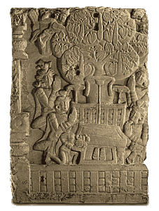

Bodhi Tree and throneThe Bodhi Tree is a symbol used to represent the Buddha's Enlightenment. This is because the Buddha sat under this tree and meditated in order to achieve Enlightenment.The Bodhi Tree is also known as the Banyan tree. Before its connection with the Buddha, it was considered to be a sacred tree. The Bodhi Tree is sometimes shown behind an empty throne in Buddhist art. The empty throne is another symbol of the Buddha. It represents the centre of the universe and symbolizes the importance of the Buddha. 
This is a relief from the Great Stupa at Amaravati showing the Bodhi Tree and empty throne. |